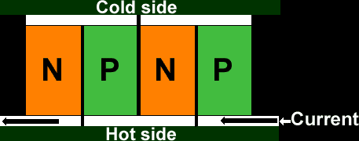

| computer |
| home page |
|  |
| This cooler is a must to aggressively overclock your graphics board. The Stealth V2 Cooler, which has all the key components thermally connected to the hot chips. The low profile design is particularly useful for tight spaces or space constrained designs (click here to read more about the Lasagna Slim Cooler for single microprocessor). Standard Stealth also fits Micro Conversions Game Wizard Voodoo2 Board for Mac. It is very easy to install the Stealth V2 Cooler, no tools needed. |